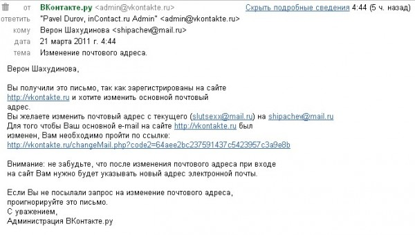

ВКонтакте я зарегистрировался очень давно, но в аккаунт захожу раз в полгода. Знакомых тым практически никого нет. Моя возрастная группа предпочитает «Одноклассники».
Когда регистрировал аккаунт, еще получал почту на ящик на mail.ru. Потом зарегистрировал свой домен и свой почтовый ящик.
Пару раз не мог зайти в ВКонтакте (не помнил пароль), восстанавливал на уже привычный email. Потом догонял, что ошибался. Восстанавливал ещё раз.
Решил контактный e-mail всё-таки поменять.
Поменял. После адреса почты на старый адрес вдруг периодически стали приходить подобные сообщения.

То есть кто-то якобы меняет свой крутой адрес на мой обычный.
Ничего хорошего за этим не вижу, письма удаляю.
До смены адреса мной таких писем не было.